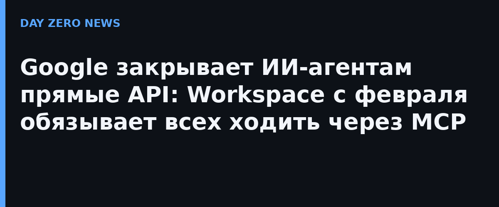

24 ноября Google опубликовала на официальном блоге Workspace анонс «Built for trust and control»: новый документ Workspace AI Tools Addendum теперь требует, чтобы ИИ-агенты подключались к Workspace через официальные MCP-серверы или CLI, а не через традиционные REST API. Формально это пункт в соглашениях для разработчиков, фактически — перекройка того, как агенты получают доступ к корпоративной почте, документам и календарям.
Техническое требование вступает в силу 1 февраля 2027 года: с этой даты вызовы Workspace API от имени ИИ-агентов и «подобных инструментов доступа» будут проходить только через MCP. Обычные бизнес-приложения (не агенты) могут продолжать работать поверх существующих REST API. Вместе с требованием Google стандартизирует тарифы использования API для агентов, а платные тарифы за масштабное потребление включаются с 1 апреля 2027 года. Для админов обещают политики управления — то есть доступ агента становится объектом централизованного контроля, а не серой зоной.
Логика прозрачна: агент, который притворяется обычным приложением и ходит в почту через REST, невозможно ни отличить, ни ограничить, ни честно зааудить. Загонка агентов в MCP и CLI даёт Google (и админам клиентов) единую точку контроля: кто пришёл, от чьего имени, какие права OAuth использует и что именно вынес из домена. На фоне случаев, когда автономные агенты выходили за пределы песочниц и хватали лишние файлы и ключи, крупные платформы постепенно переводят агентский доступ из «доверим по OAuth и разберёмся» в «только по протоколу и под политикой».
MCP ещё год назад был протоколом-стартапом от Anthropic, а теперь становится де-факто отраслевым стандартом агентского доступа: его поддерживают OpenAI, Microsoft и другие крупные игроки, а требование Google — первый случай, когда доступ агентов к большим корпоративным данным законочен контрактно, а не по хорошему тону. Разработчикам агентов стоит заранее проверить, как их интеграции ходят в Workspace: после 1 февраля 2027 года самовольные REST-вызыки от имени агента просто перестанут быть легальными по правилам платформы.